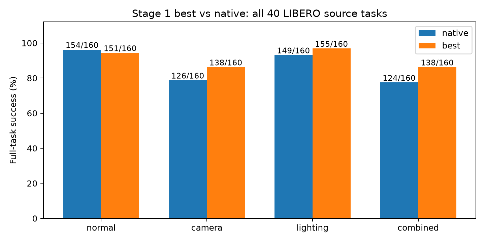
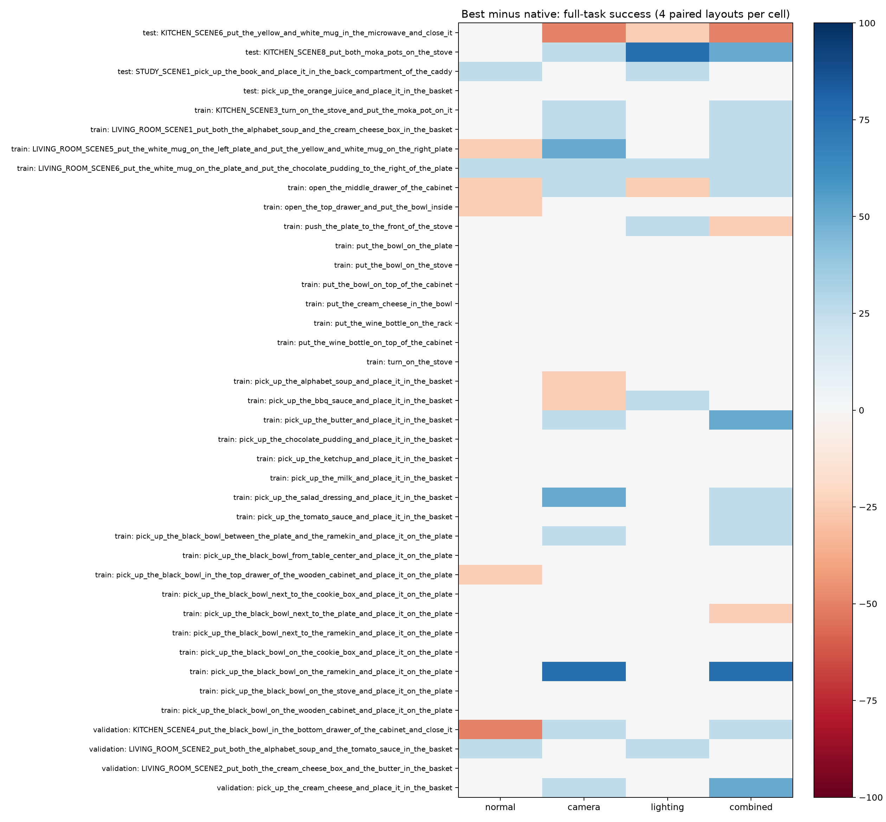
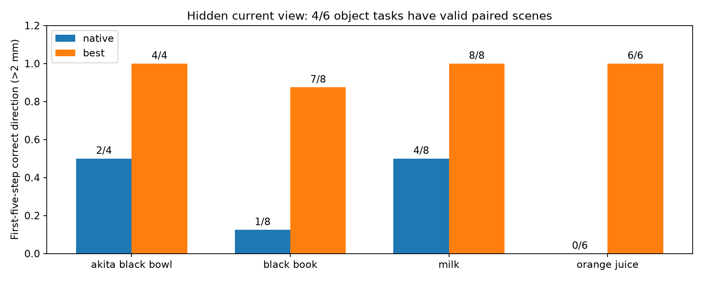

40任务合计：原生 553/640，best 582/640，差值 +4.53 个百分点。正常场景差值 -1.88 个百分点；本项目4个test源任务合计：原生 46/64，best 49/64。结合各扰动条件及配对区间解读，不能用全部任务均值取代test结果。
有效回合全部完成。S/P为完整任务成功，H为首次方向。系统评估与限制 · 汇总表 · 资源实测 · 逐任务成败变化


只比较阶段一 best（1500）与 MolmoAct2 原生。808 个候选条件，最多 1,616 次 rollout。完成：True；已记录策略回合：1480。表格只纳入两模型及所有条件均已完成的布局，其他样本仍待评估。
S：40 个任务的视角/灯光变化；P：6 类物体真实偏移 ±4 cm 后的完整任务；H：6 类物体的历史证据与首次 5 步方向，阈值 2 mm。H 的方向正确不等于完成任务。
场景剔除先于策略结果；按物理接触、非目标状态一致性、标定和信息隔离决定。被剔除的任务必须显式报告，不能算作模型失败或从分母中无声消失。H 当前灰屏是机制压力测试。

按 manual seed 3317 每类物体选一个有效布局；展示真实过去画面、当前灰屏和动作执行后的评估画面。采用讲解停帧，不代表实时推理速度。
| 测试 | 本项目划分 | 条件 | 模型 | 成功/正确 | 任务数 |
|---|---|---|---|---|---|
| H | test | hidden | best | 13/14 | 2 |
| H | test | hidden | native | 1/14 | 2 |
| H | test | visible | best | 12/14 | 2 |
| H | test | visible | native | 14/14 | 2 |
| H | train | hidden | best | 12/12 | 2 |
| H | train | hidden | native | 6/12 | 2 |
| H | train | visible | best | 12/12 | 2 |
| H | train | visible | native | 12/12 | 2 |
| P | test | minus_y | best | 4/4 | 1 |
| P | test | minus_y | native | 4/4 | 1 |
| P | test | normal | best | 4/4 | 1 |
| P | test | normal | native | 3/4 | 1 |
| P | test | plus_y | best | 4/4 | 1 |
| P | test | plus_y | native | 4/4 | 1 |
| P | train | minus_y | best | 7/8 | 2 |
| P | train | minus_y | native | 7/8 | 2 |
| P | train | normal | best | 8/8 | 2 |
| P | train | normal | native | 8/8 | 2 |
| P | train | plus_y | best | 8/8 | 2 |
| P | train | plus_y | native | 8/8 | 2 |
| P | validation | minus_y | best | 4/4 | 1 |
| P | validation | minus_y | native | 4/4 | 1 |
| P | validation | normal | best | 4/4 | 1 |
| P | validation | normal | native | 4/4 | 1 |
| P | validation | plus_y | best | 4/4 | 1 |
| P | validation | plus_y | native | 4/4 | 1 |
| S | test | camera | best | 10/16 | 4 |
| S | test | camera | native | 11/16 | 4 |
| S | test | combined | best | 11/16 | 4 |
| S | test | combined | native | 11/16 | 4 |
| S | test | lighting | best | 14/16 | 4 |
| S | test | lighting | native | 11/16 | 4 |
| S | test | normal | best | 14/16 | 4 |
| S | test | normal | native | 13/16 | 4 |
| S | train | camera | best | 115/128 | 32 |
| S | train | camera | native | 104/128 | 32 |
| S | train | combined | best | 114/128 | 32 |
| S | train | combined | native | 103/128 | 32 |
| S | train | lighting | best | 126/128 | 32 |
| S | train | lighting | native | 124/128 | 32 |
| S | train | normal | best | 123/128 | 32 |
| S | train | normal | native | 126/128 | 32 |
| S | validation | camera | best | 13/16 | 4 |
| S | validation | camera | native | 11/16 | 4 |
| S | validation | combined | best | 13/16 | 4 |
| S | validation | combined | native | 10/16 | 4 |
| S | validation | lighting | best | 15/16 | 4 |
| S | validation | lighting | native | 14/16 | 4 |
| S | validation | normal | best | 14/16 | 4 |
| S | validation | normal | native | 15/16 | 4 |
demos.csv · eligibility.csv · failure_transitions.csv · history_action_dependence.csv · paired_effects.csv · paired_episodes.csv · runtime.csv · scene_exclusions.csv · scores.csv · system_scores.csv · task_rates.csv · 完整证据 · 先前192次结果 · 统一日志
不同回合保留不同种子及原始记录。本批是在看过上一轮结果后开展的探索性扩展。初态对本次评测是新的，不一定对训练是新的；仅4个源任务属于原始test划分。所有物体仍是现有LIBERO网格，底座可能见过，不能宣称全新物体类别泛化。